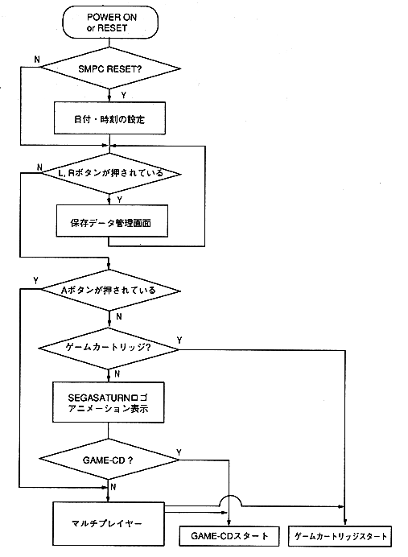

Return to previous page ｜ Return to menu ｜ Go to next page
-
Boot ROM processing flow
-
Processing flow
If GAME-CD is recognized while the - SEGASATURN logo is displayed, the game will automatically start. For other than GAME-CD , run multiplayer .

Figure 1 Outline of BOOT ROM processing flow
Return to previous page ｜ Return to menu ｜ Go to next page